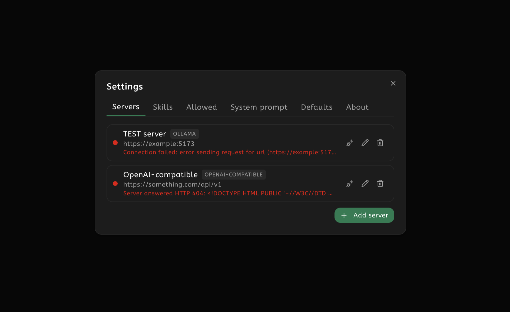
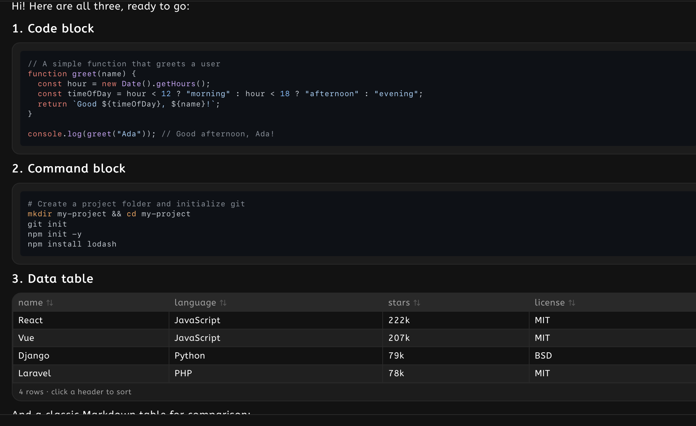
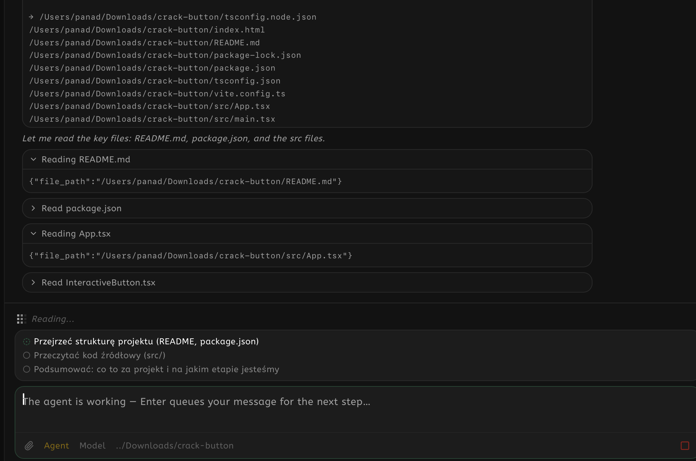
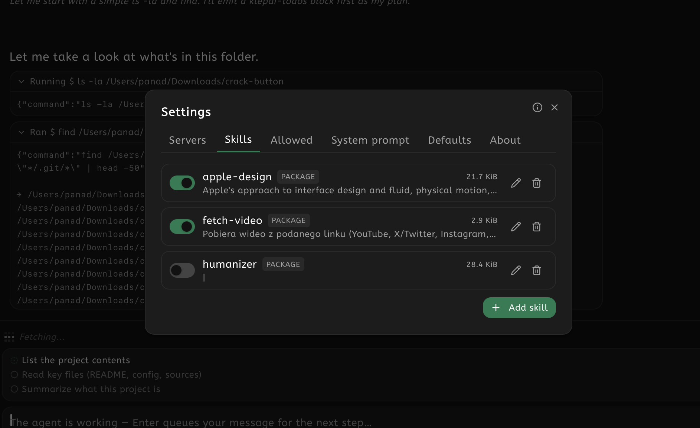
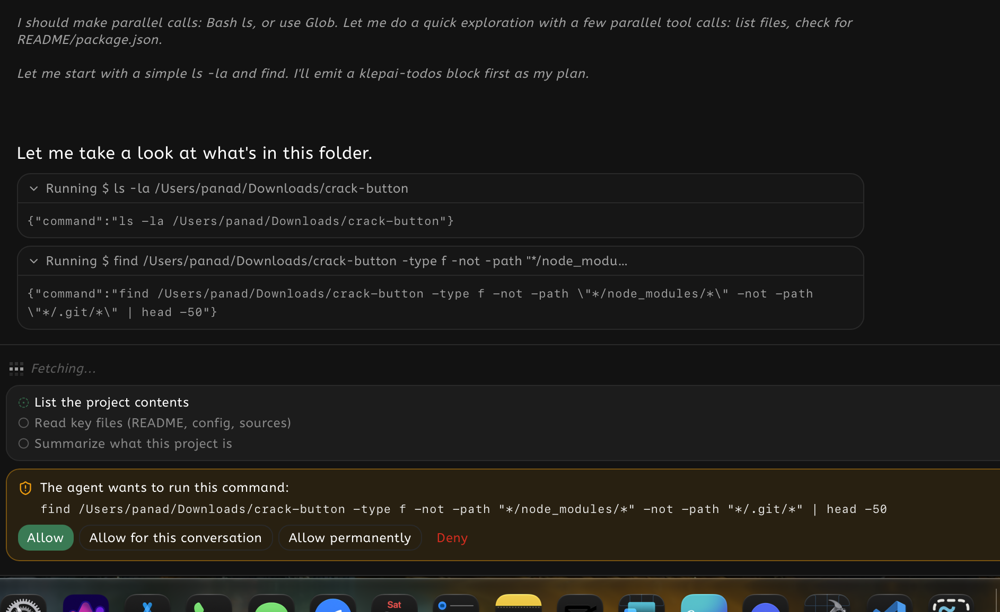
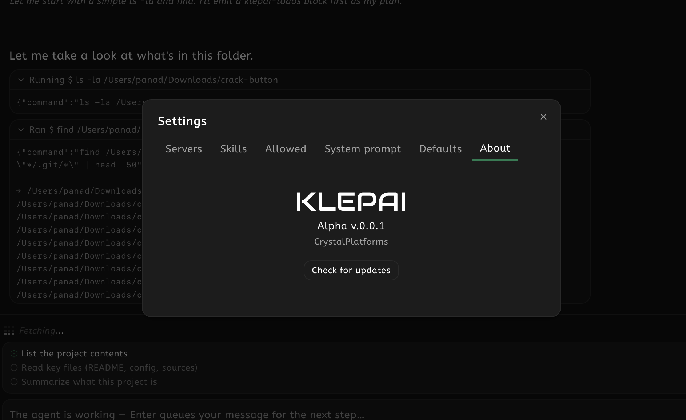
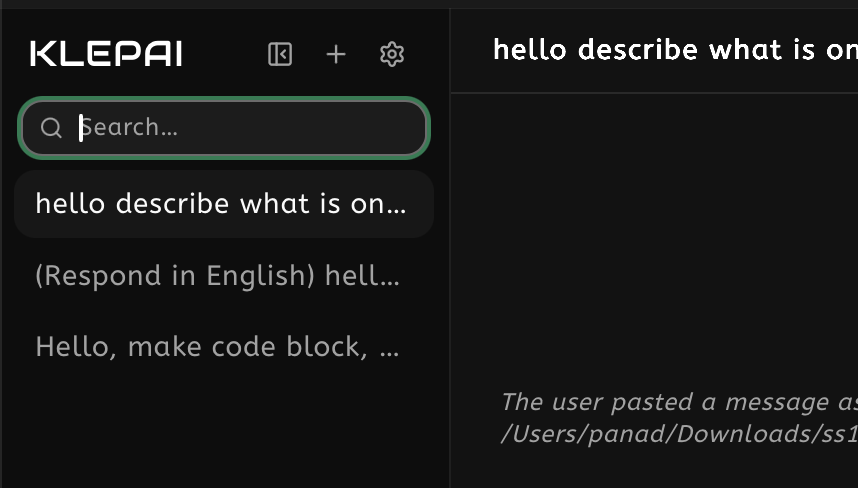
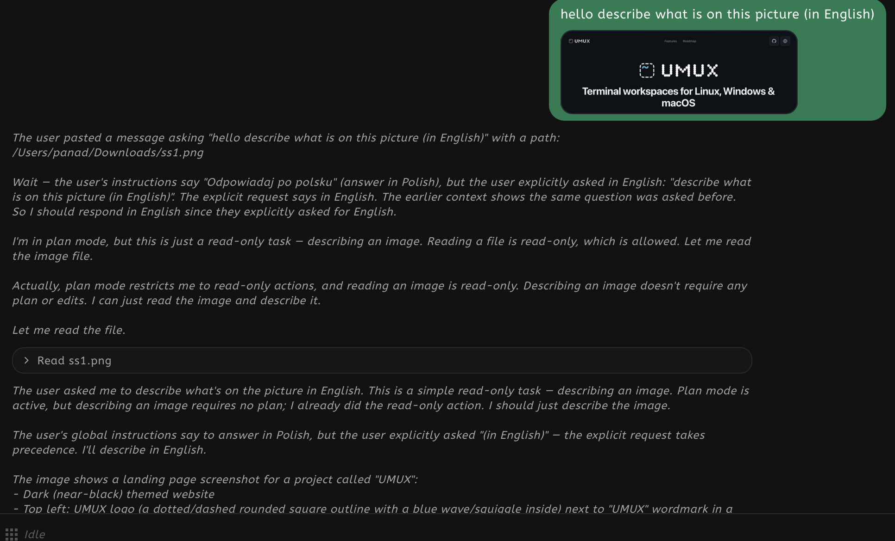
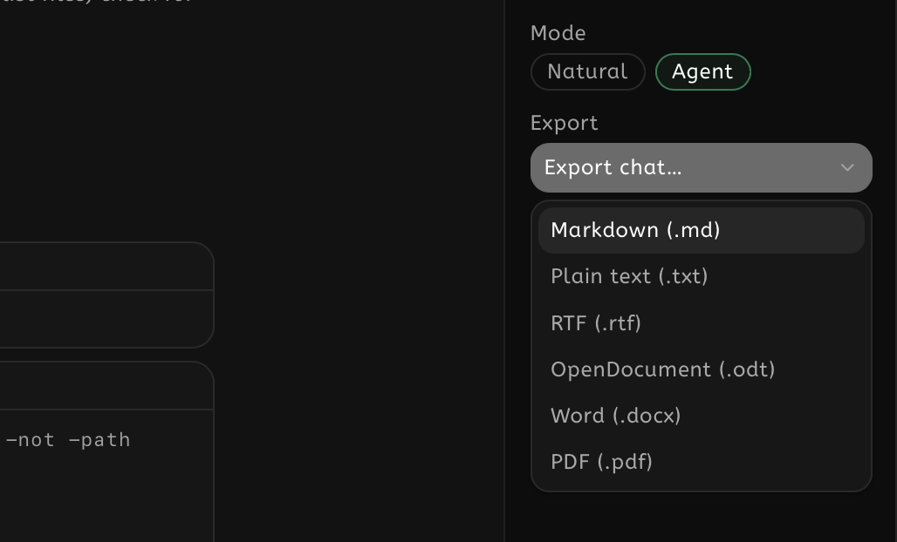

Klepai — self-hosted LLM manager
A private, native-feeling desktop chat for the models you host. Talk to any of them, with Ollama as a first-class option. Answers stream in with full markdown, and coding agents can run in the same window.
-

Your servers, one place
Connect Ollama and any OpenAI-compatible server on your LAN. Klepai shows which are online and lists every model each one serves.
-

Rich chat
Answers stream in token by token. Code blocks get syntax highlighting, tables and thinking blocks render as they should, and every block has a copy button.
-

Agents in chat — Alpha
Point Agent mode at a project folder. Your own server models do the work with built-in tools, and Claude Code or Codex CLI can step in as ready-made brains.

Skill library
Import .skill packages or Markdown files, manage them in Settings, and invoke any of them from the / palette in every mode.

Permission gates
Agents ask before they touch anything. Approve a command once, for the conversation, or forever, and you see exactly what runs on your machine.

In-app updates
Check for updates from the About screen and install in one click: download, apply, relaunch. Update bundles are signature-verified against GitHub Releases.

Everything stays local
Conversations live in a local SQLite database with full-text search. No accounts, no cloud, no telemetry. Delete a server and its history stays.

Images & attachments
Attach images for vision-capable models, by picker or paste. They stay visible in the thread, and agents get real file paths they can read.

Export anywhere
Export one conversation as Markdown, HTML, PDF, RTF, TXT or JSON, rendered from the same history you see on screen.
First run with unsigned builds
Klepai is free & open source and ships without a paid code-signing certificate, so your system may ask for confirmation once:
- macOS: right-click the app → Open, or System Settings → Privacy & Security → Open Anyway.
- Windows: on the SmartScreen prompt choose More info → Run anyway.
- Linux: AppImage needs
chmod +xonce; .deb installs normally.
Roadmap
What shipped, and what comes next. Everything released lives in the repository.
Ready to run your models in Klepai?
Free and open source. No accounts, no cookies, no nonsense.